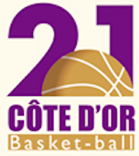

En reconversion professionnelle et après avoir commencé ma formation en autodidacte. Je souhaite accélérer ma formation en pratiquant cette activité au sein d'une entreprise et entourée de professionnels qui pourront m'aider à acquérir les bonnes pratiques.
Par ailleurs l'apprentissage me permettra de rendre mes compétences acquises et en cours d'acquisition utiles.
Enfin je pourrais m'imprégner de la culture de l'entreprise dans l'objectif de poursuivre notre collaboration à la suite de ma formation.
2020
2019
2017
2016
2015
2014
2013
2011
2009
2006
Mon parcours

Comité de Basketball de Côte d'Or Chargée de mission
- Formation des utilisateurs aux logiciels de la fédération
- Gestion de la péréquation des arbitres (mise en place d'un fichier excel pour un suivi instantané
- Gestion du sute internet
- Développement des école d'arbitrage
- Désignation des arbitres
- Encadrement de la pratique Basket Santé
- Pédagogie envers différents public
- Créativité
- Rigeure
- Réactivité
Fédération Française de BasketBall Arbitre de basket (niveau championnat de France)
- Gestion des relations humaines
- Gestion du stress
JDA Dijon Association Entraîneure et secrétaire
- Gestion des planing de matchs du club (mise en place d'un fichier Excel)
- Gestion d'un tournoi (plus de 100 équipes - via la création d'un fichier Excel)
- Création et gestion de l'école d'arbitrage
- Prise de statistiques de l'équipe professionnelle
- Entraîneure d'équipes de jeunes, mono-basket, assistante U15M Elite
CSLD BasketEntraîneure
- Éducation sportive en périscolaire
- Entraîneure d'équipes de jeunes, assistante U18F Elite